Energy Decomposition Analysis (EDA)¶
- EDA with restricted fragments (ammonia borane)
- EDA with unrestricted fragments (ethane)
- EDA-NOCV: natural orbitals for chemical valence (metal complexes)
EDA with restricted fragments¶
This tutorial explains how to perform an energy decomposition analysis (EDA) [1] of ammonia borane, in which ammonia and borane have a donor-acceptor interaction with each other. In this way, you can examine which interactions result in a stable complex.
The bond energy (or binding energy) of H3N-BH3 is defined as:
in which ENH3 and EBH3 are the energies of the optimized reactants, and EH3N-BH3 is the energy of the optimized complex.
Note
If you simply optimize a H3N-BH3 complex with ADF, the printed bond energy is not calculated from the above equation. Instead, it is calculated with respect to spherically symmetric spin-restricted atomic fragments. See more below.
The bond energy consists of the preparation energy (or strain energy, deformation energy), and the interaction energy:
The preparation energy is the amount of energy that is required to deform the NH3 and BH3 from their equilibrium structure to the geometry they have in the complex. The interaction energy is the change in energy when the prepared fragments (NH3 and BH3 in the complex geometry) are combined to form the complex. A quantitative energy decomposition analysis (EDA) divides the interaction energy in the electrostatic interaction, Pauli repulsion, and attractive orbital interactions (oi):
The electrostatic interaction, which is usually attractive, is the energy between the unperturbed charge distributions of the prepared fragments. The Pauli repulsion is responsible for steric repulsion, it consists of the destabilizing interactions between occupied orbitals of the fragments. The orbital interaction accounts for charge transfer and polarization.
Geometry Optimizations of NH3, BH3 and H3N-BH3¶
To calculate \(\Delta E\), the energies of optimized NH3, BH3 and H3N-BH3 need to be calculated. Note that another basis set and functional can be used as well. Symmetry will be used, which may help in the analysis. Open AMSinput (SCM → New Input), and perform the following steps:
- 3. Select Task → Geometry Optimization4. Select XC functional → GGA:BP865. Select Basis set → TZP5. Select Numerical quality → Good7. Run the calculation with File → Run (save with the name
ammonia)
{kind=link}
{kind=link}
Repeat the above steps for BH3:
{kind=link}
Repeat the above steps for H3N-BH3.
- To create H3N-BH3, combine the previous two systems by copying and pasting.Repeat steps 2-7 (save with the name
ammoniaborane).
{kind=link}
EDA: single-point calculation with molecular fragments¶
When the H3N-BH3 calculation has finished, AMSinput will ask whether to update the coordinates.
- 1. Select Yes → New Job, or manually create a new job with the optimized geometry and the previous calculation settings (XC functional, basis set, numerical quality).2. Set Task → Single Point.
{kind=link}
- 3. Go in the panel bar to Model → Regions4. Select the atoms of NH3 and click the
 button next to Regions, and rename Region_1 to
button next to Regions, and rename Region_1 to NH35. Select the atoms of BH3 and click also on the button, and rename Region_2 to BH3.
{kind=link}
- 6. Go in the panel bar to MultiLevel → Fragments7. Check the ‘Use fragments’ check box8. Run the calculation (save with the name
EDA_ammoniaborane).
{kind=link}
The job actually runs three separate calculations. First, single point
calculations of NH3 and BH3 in their prepared geometry are
run. The adf.rkf files of those single point computations are then used for the
fragment analysis.
Bond energy, preparation energy, interaction energy¶
The energy of a calculation can be found at the bottom of the logfile (SCM → Logfile), in the output (SCM → Output), or in the binary output file (SCM → KFbrowser).
To tabulate the energies from all previous calculations, either
- use one of the above methods to get the energy for each calculation
- Build a spreadsheet summary: In AMSjobs (SCM → Jobs), select the
ammonia,borane,ammoniaborane,EDA_ammoniaborane,EDA_ammoniaborane.NH3, andEDA_ammoniaborane.BH3jobs by holding Ctrl and clicking on them. Then go to Tools → Build spreadsheet, set the Energy unit to kcal/mol, and click Do It. Save with the namereport.xlsx.
{kind=link}
Fig. 36 Spreadsheet summary of all calculations. The “Notes” and energy calculations were manually added.
The bond energy \(\Delta E\) of H3N-BH3 was calculated to be -31.81 kcal/mol with these settings. (-838.47 - (-444.53) - (-362.14) = -31.81)
The preparation energy for BH3 (12.64 kcal/mol, calculated as -349.50-(-362.14)) is much larger than that for NH3 (0.11 kcal/mol). This is because the structure of the fully relaxed NH3 is only slightly different from the structure of the NH3 fragment in H3N-BH3. However, the structure of the fully relaxed flat BH3 (symmetry D3h) is substantially different than the structure of the BH3 trigonal pyramidal fragment in H3N-BH3 (symmetry C3v):
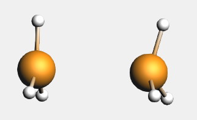{kind=link}
The interaction energy is simply the “bond energy” output by ADF for the
EDA_ammoniaborane job. This is because that job used the reactants in the
prepared geometries as fragments.
EDA Analysis¶
The energy decomposition of the interaction energy of H3N-BH3 can be found in the output file of the fragment analysis (job
ammoniaborane, SCM → Output, followed by Properties → Bonding Energy
Decomposition). You can find for instance that H3N-BH3
has an interaction energy of -44.55 kcal/mol, which consists of a Pauli
repulsion of 107.97 kcal/mol, an electrostatic interaction of -77.44 kcal/mol,
and an orbital interaction of -75.09 kcal/mol.
{kind=link}
The orbital interaction is decomposed into contributions from different irreducible representations of the molecular point group. In this case the contributions from A1 (\(\sigma, \sigma^*\)-orbitals) are much more important than those from E1 (\(\pi, \pi^*\)-orbitals).
With AMSlevels the molecular orbital diagram can be visualized, in which one can see a donor-acceptor interaction and (repulsive) interactions between occupied orbitals.
- 1. SCM → Levels2. In AMSlevels, click on View → Labels → Show
{kind=link}
By right-clicking the BH3 2A1 fragment orbital (LUMO of BH3, acceptor orbital) you can select the corresponding SFO (symmetrized fragment orbital), which can be visualized with AMSview. Similarly, you can select the NH3 2A1 fragment orbital (HOMO of NH3, donor orbital). After some manipulations, using 50% opacity, you can get the following two AMSview windows that show these fragment orbitals.
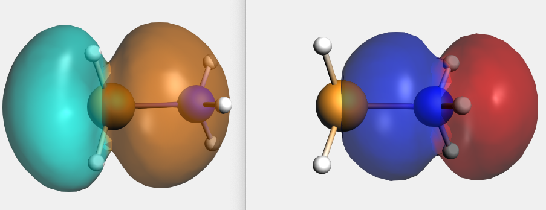{kind=link}
EDA with unrestricted fragments¶
This tutorial explains how to perform an energy decomposition analysis (EDA) of a molecule with unrestricted fragments, for example the CH3 groups of ethane. Hereby, the user can examine which interactions result in the stable molecule. To see an explanation of these different interactions or to do an EDA without unrestricted fragments, see the EDA of Ammonia Borane tutorial.
Geometry Optimization¶
The geometry of the reactants and the product (complex) must be optimized. Note that another basis set and functional can be used as well. Symmetry will be used, which may help in the analysis.
For ethane:
- 3. Select Task → Geometry Optimization4. Select XC functional → GGA:BP865. Select Basis set → TZP5. Select Numerical quality → Good7. Run the calculation with File → Run (give an appropriate name to your calculations)8. When the run has finished, click ‘Yes’ to import the optimized coordinates and save it
For CH3 (methyl) an unrestricted calculation is needed:
- 3. Select Task → Geometry Optimization4. Check the Unrestricted box.5. Enter
1.0as Spin polarization6. Select XC functional → GGA:BP867. Select Basis set → TZP8. Select Numerical quality → Good9. Run the calculation with File → Run (give an appropriate name to your calculations)10. When the run has finished, click ‘Yes’ to import the optimized coordinates and save it
The bond energy of C2H6 can be calculated by subtracting the energies of the reactants (two CH3) from the energy of the complex. The energies can be found at the bottom of the logfile or in the output.
The bond energy of C2H6 was calculated to be -93.53 kcal/mol with these settings. (-920.23 - 2*(-413.35)) = -93.53)
EDA¶
Single point calculations of the CH3 groups in the geometry they have in the product are needed to perform an EDA. Note that one sometimes need to change the electron configuration of the fragments to make them so called ‘prepared for bonding’ in order to minimize the Pauli repulsion in the electron pair bond. This is not needed in this simple example.
- 1. Perform a new calculation with the optimized molecule, ethane2. Select the Task Single Point3. Check the Unrestricted box.4. Select XC functional → GGA:BP865. Select Basis set → TZP6. Select Numerical quality → Good
{kind=link}
- 7. Go in the panel bar to Model → Regions8. Select the atoms of one CH3 group and click the button next to Regions9. Select the atoms of the other CH3 group and click also on the button
{kind=link}
- 10. Go in the panel bar to MultiLevel → Fragments11. Check the ‘Use fragments’ check box (A warning will popup regarding NOSYM symmetry)12. Enter as spin polarization
1for one of the fragments and-1for the other fragment
{kind=link}
The symmetry has been adjusted to NOSYM. However, we want to use symmetry. Besides setting the symmetry to AUTO, in this case we also need to symmetrize the coordinates again, since using fragments will lower the symmetry of ethane that ADF can use from D3d to C3v. Note that in this case the symmetrization will only reorient the geometry in order to fulfill the molecular orientation requirements in ADF such that ADF can use symmetry.
Analysis¶
The different energies, where the interaction energy of the CH3 groups of ethane consists of, are noted in the output (Properties → Bonding Energy Decomposition). It can be noticed that the interaction energy of -111.41 kcal/mol is build out of 180.02 kcal/mol Pauli repulsion, -125.43 kcal/mol electrostatic interaction, and -166.02 kcal/mol orbital interactions.
The orbital interaction is decomposed into contributions from different irreducible representations of the molecular point group. In this case the contributions from A1 (\(\sigma, \sigma^*\)-orbitals) are much more important than those from E1 (\(\pi, \pi^*\)-orbitals).
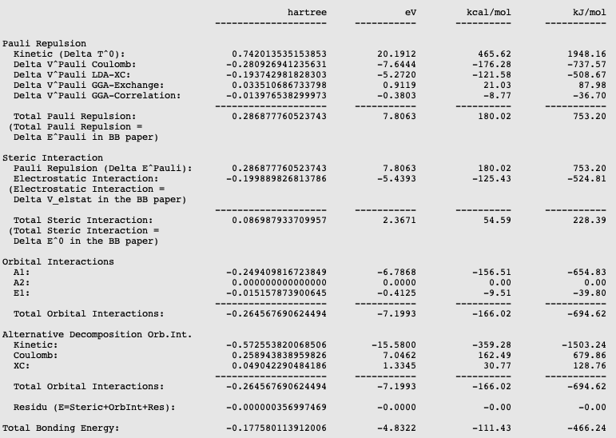{kind=link}
The bond energy was calculated previously to be -93.53 kcal/mol and accordingly the preparation energy can be calculated to be 17.88 kcal/mol (=-93.53-(-111.41)). The preparation energy for one CH3 fragment is 8.95 kcal/mol, the difference between the bond energy of the CH3 trigonal pyramidal fragment (-404.40 kcal/mol) and the fully relaxed planar CH3 molecule (-413.35 kcal/mol). The preparation energy of the other CH3 fragment is the same. Note that the energies of the fragments can be found at the bottom of the logfile or in the output of the fragments.
With AMSlevels the molecular orbital diagram can be visualized, in which one can see an electron-pair bond and (repulsive) interactions between occupied levels.
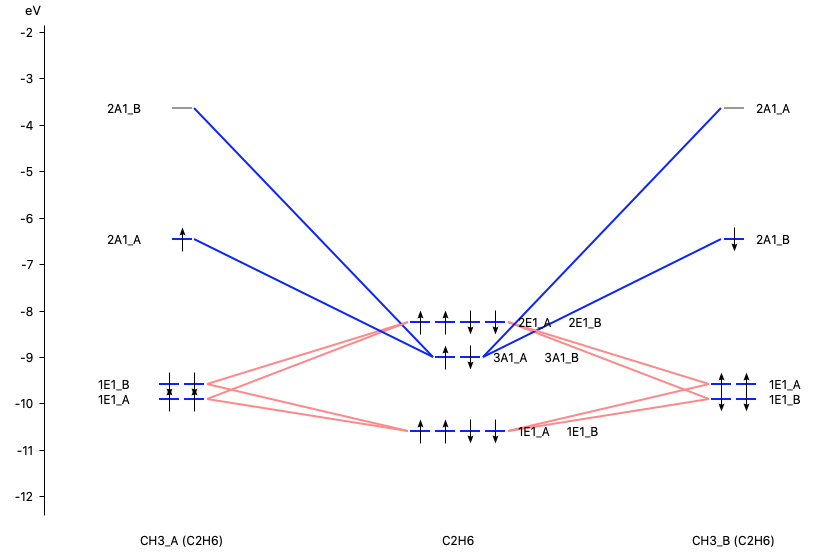{kind=link}
Dispersion correction¶
Dispersion energy can be of importance in complexes with weak bonds. The dispersion energy is a long-ranged electron correlation effect. When using, for example, a DFT-D3 functional or a DFT-D4 functional the dispersion corrected energy will also be a part of the interaction energy:
The dispersion corrected interaction energy will be printed in the output file just as the electrostatic interaction, Pauli repulsion, and orbital interactions. The dispersion corrections are XC functional dependent, and contain fitted parameters. For many XC functionals such parameters are available in AMS.
EDA-NOCV: natural orbitals for chemical valence¶
An energy decomposition analysis - natural orbitals for chemical valence (EDA-NOCV), also known as extended transition state - natural orbitals for chemical valence (ETS-NOCV), can be used for the analyzation of [TM]-L bonds in transition metal compounds. This method combines the energy decomposition analysis [1] with the natural orbitals for chemical valence [2]. This tutorial will show how to use the EDA-NOCV method for a Fischer-type carbyne complex and a Schrock-type carbyne complex, based on the paper of Jerabek et al. [3]
The EDA-NOCV/ETS-NOCV method gives insight in the orbital interactions for non-symmetric molecules, because the deformation density is decomposed into different components (σ, π, δ) of the chemical bond. In the ETS-NOCV: Natural Orbitals for Chemical Valence documentation more information about this method can be found.
In carbyne complexes, various types of orbital interaction between a ligand and the TM can be distinguished:
- donor–acceptor complexes possessing dative bonds (Fischer‐type carbynes)
- electron‐sharing bonds (Schrock‐type carbynes)
Here we follow Ref. [3], in order to see whether the results of the EDA-NOCV calculations may provide a useful classification of the TM compounds into the these two types of molecules. Note that this example focuses on the understanding of [TM]-L bonds and compares results using different electron configurations of the fragments. This example does not calculate bond energies.
Some remarks on the analysis. The EDA depends on the fragments chosen, whether neutral or charged fragments are used, and which spin state they have. For the EDA-NOCV method it is necessary that the sum of the number of spin-α orbitals in the fragments is the same as in number of spin-α orbitals the full complex, likewise for the number of spin-β orbitals. If there is (near) degeneracy between different electron configurations of the fragments, for the analysis it is best to use the electron configuration of the fragments such that they are so called ‘prepared for bonding’ in order to minimize the Pauli repulsion in the electron pair bond. For example, if one has two fragments which both have unpaired electrons, one typically would put the unpaired electrons of the first fragment in the spin-α orbitals and the unpaired electrons of the second fragment in the spin-β orbitals. In this example this will be used, but not all possible reasonable electron configurations will be investigated, which might have been better ‘prepared for bonding’. Note that here so called ‘real’ unrestricted fragments will be used, which was not possible in the ADF version that was used in Ref. [3]. This means that the energies in the EDA that will be reported here are not directly quantitatively comparable to those in Ref. [3].
An EDA-NOCV will be performed on the Fischer-type carbyne complex Br(CO)4W-CPh and on the Schrock-type carbyne complex Cl3(dme)W-CCMe3 with fragments in 1. the singlet state (dative bonding), 2. the quartet state (electron-sharing bonding), and 3. the doublet state (mixed dative/electron-sharing bonding).
The geometry of Br(CO)4W-CPh can be downloaded here and the geometry of Cl3(dme)W-CCMe3 can be downloaded here. Single Point calculations will be performed on these optimized complexes.
1. Dative bonding¶
These calculations are based on the paper of Jerabek et al. [3] and therefore the following level of theory is used. Perform the following steps for the Br(CO)4W-CPh and Cl3(dme)W-CCMe3 complexes you just downloaded:
- 1. Open the geometry of the complex in AMSinput2. Make sure that the Task is set at Single Point3. Select the GGA:BP86-D3(BJ) XC functional and TZ2P Basis set4. Make sure that the Relativity is set at Scalar5. Select Frozen Core → None and Numerical quality → Good6. Go in the panel bar to Model → Regions7. Select the atoms of the ligand (C-tBu or C-Ph group) and click the button next to Regions8. Select all other atoms of the complex (by Select → Invert Selection) and click the button again
{kind=link}
- 9. Go in the panel bar to MultiLevel → Fragments10. Tick the Use fragments box (the Check charge and spin box and no symmetry will be set)11. Enter as charge for the ligand fragment
1.0and for the other fragment-1.0
{kind=link}
- 13. Go in the panel bar to Properties → ETS-NOCV14. Select an Closed-Shell ETS-NOCV analysis15. Run the calculationNote that one may have SCF problems for the fragment [Cl3(dme)W]-1
In this case both charged fragments are calculated in the singlet state.
SCF problems¶
The fragment [Cl3(dme)W]-1 has problems with SCF convergence. It is difficult (or impossible) to converge the SCF with an aufbau solution. Therefore one can use an explicit non-aufbau electron configuration. Note that the following is an expert option. If you do not include the next expert steps you may get a different non-aufbau solution, and thus a different energy decomposition analysis for Cl3(dme)W-CCMe3 for this case of charged fragments.
- Relevant only for the fragment [Cl3(dme)W]-1 of Cl3(dme)W-CCMe3Open the fragment [Cl3(dme)W]-1 AMSinputGo in the panel bar to Details → Run ScriptEnter in Engine ADF part:IrrepOccupationsA 148 0 0 2 2EndSelect File → SaveClose the fragment [Cl3(dme)W]-1 AMSinputOpen the Cl3(dme)W-CCMe3 AMSinputRun the calculation
{kind=link}
2. Electron-sharing bonding¶
To analyse the electron-sharing bonding of [TM]-L, step 1-8 must be performed again. After that, the following steps can be made:
- 9. In the Main panel bar tick the box for an Unrestricted calculation
{kind=link}
- 10. Go in the panel bar to MultiLevel → Fragments11. Tick the Use fragments box (the Check charge and spin box and no symmetry will be set)12. Enter as spin polarization for the ligand fragment
3.0and for the other fragment-3.0(the charges should be set to0for both fragments).
{kind=link}
- 13. Go in the panel bar to Properties → ETS-NOCV14. Select an Open-Shell ETS-NOCV analysis15. Run the calculation
In this case both neutral fragments are calculated in the quartet state (more precisely they have |Sz|=3/2).
3. Dative/Electron‐sharing bonding¶
To analyse the mixed dative/electron‐sharing bonding of [TM]-L, the steps for the electron-sharing must be performed again, apart from step 12, which should be
- 12. In the panel bar MultiLevel → Fragments enter as spin polarization for the ligand fragment
1.0and for the other fragment-1.0(the charges should be set to0for both fragments).
such that both neutral fragments are calculated in the doublet state (more precisely they have |Sz|=1/2). Note that the fragment CCMe3 has near degenerate solutions in case it is calculated in the doublet state, and that one solution may have a corresponding electron configuration that may be better ‘prepared for bonding’ than another. This will not be investigated further.
EDA¶
The different energy terms of the interaction between the ligand and its transitions state complex are noted in the output (Properties → Bonding Energy Decomposition). The following energy terms will be found for Br(CO)4W-CPh and Cl3(dme)W-CCMe3 (in kcal/mol):
| Br(CO) 4 W-CPh | Dative | Electron-sharing | Dative/Electron‐sharing |
|---|---|---|---|
| ΔEint | -261.9 | -191.0 | -154.8 |
| ΔEPauli | 232.8 | 230.3 | 292.5 |
| ΔVelstat | -211.0 | -173.3 | -214.7 |
| ΔEoi | -275.3 | -239.6 | -224.3 |
| ΔEdisp | -8.4 | -8.4 | -8.4 |
| Cl 3 (dme)W-CCMe 3 | Dative | Electron-sharing | Dative/Electron‐sharing |
|---|---|---|---|
| ΔEint | -427.4 | -194.7 | -177.1 |
| ΔEPauli | 303.4 | 302.2 | 690.4 |
| ΔVelstat | -251.2 | -224.4 | -436.2 |
| ΔEoi | -468.6 | -261.3 | -420.1 |
| ΔEdisp | -11.2 | -11.2 | -11.2 |
The method which results in an orbital interaction closer to zero gives the commonly accepted chemical interpretation (dative or electron-sharing), see Ref. [3].
For the Fischer-type carbyne complex Br(CO)4W-CPh the orbital interaction is closer to zero for the dative/electron sharing bonding with an orbital interaction of -224.3 kcal/mol (vs -239.6 or -275.3 kcal/mol).
For the Schrock-type carbyne complex Cl3(dme)W-CCMe3 the orbital interaction is closer to zero for the electron-sharing bonding with an orbital interaction of -261.3 kcal/mol (vs -420.1 or -468.6 kcal/mol).
EDA-NOCV Fischer‐type carbyne complex¶
The best description for the Fischer‐type carbyne complex Br(CO)4W-CPh is found for neutral fragments in their electronic doublet state (|Sz|=1/2), which engage in a mixture of dative bonding (σ donation and π backdonation) and one electron‐sharing π bond, as can be seen in the next NOCV analysis.
- Go to AMSjobsSelect the Br(CO)4W-CPh job with neutral fragments in their electronic doublet state (the third job, dative/electron-sharing bonding)Open AMSview (SCM → View)Select Fields → Grid → Medium)Select Add → Isosurface: With Phase)In the field select menu on the bottom: select NOCV Def Densities…Select NOCV_Def_Density with largest eigenvalueChange isosurface value to 0.01Repeat this for NOCV_Def_Density with the 5 highest eigenvalues
The direction of the charge flow from fragments to full complex in the next pictures is from red → blue. The orbital interaction energy contributions from each NOCV pair can be found in the output (Properties → ETS - NOCV).
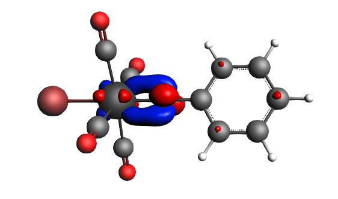{kind=link}
α-Δρ ΔE=-80 kcal/mol (|v|=1.00), electron‐sharing π bond
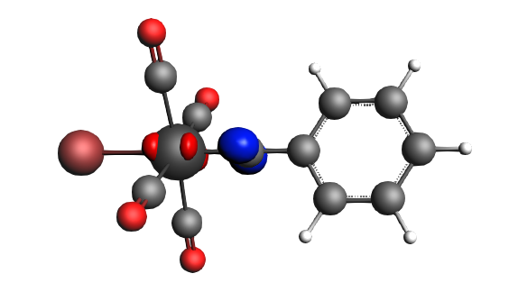 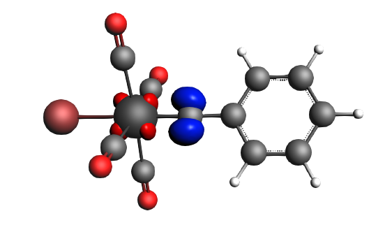{kind=link}
{kind=link}
left: β-Δρ ΔE=-30 kcal/mol (|v|=0.54), right: β-Δρ ΔE=-39 kcal/mol (|v|=0.53), π backdonation
 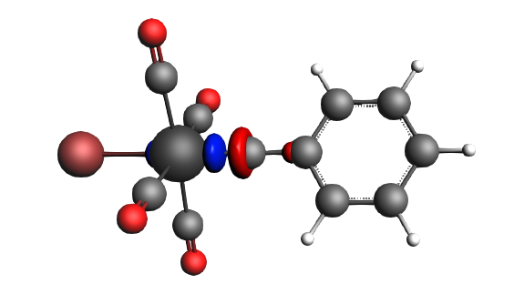
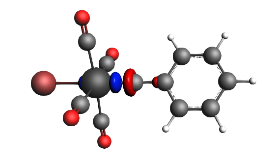
{kind=link}
left: β-Δρ ΔE=-30 kcal/mol (|v|=0.34), right: α-Δρ ΔE=-29 kcal/mol (|v|=0.34), σ donation
EDA-NOCV Schrock‐type carbyne complex¶
The best description for the Schrock‐type carbyne complex Cl3(dme)W-CCMe3 is found for neutral fragments in their electronic quartet state ((|Sz|=3/2), which engage in one electron-sharing σ bond and two electron‐sharing π bonds, as can be seen in the next NOCV analysis.
- Go to AMSjobsSelect the Cl3(dme)W-CCMe3 job with neutral fragments in their electronic quartet state (the second job, electron-sharing bonding)Open AMSview (SCM → View)Select Fields → Grid → MediumSelect Add → Isosurface: With PhaseIn the field select menu on the bottom: select NOCV Def Densities…Select NOCV_Def_Density with largest eigenvalueChange isosurface value to 0.01Repeat this for NOCV_Def_Density with the 6 highest eigenvalues
The direction of the charge flow from fragments to full complex in the next pictures is from red → blue. The orbital interaction energy contributions from each NOCV pair can be found in the output (Properties → ETS - NOCV).
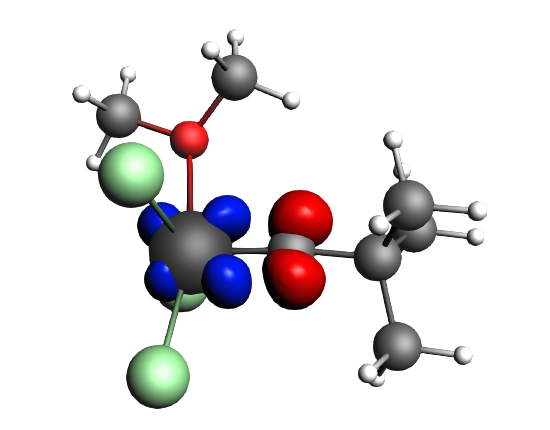 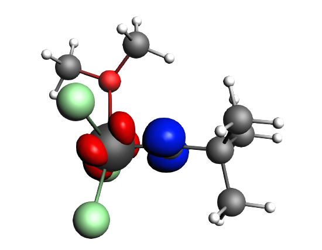 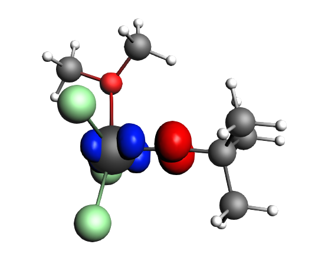 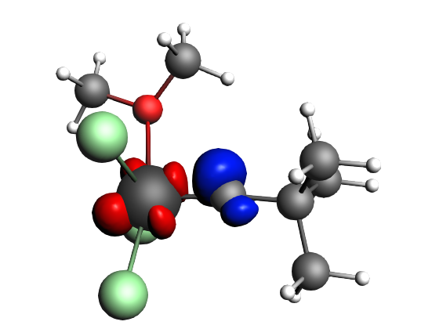{kind=link}
{kind=link}
{kind=link}
{kind=link}
top-left: α-Δρ ΔE=-32 kcal/mol (|v|=0.65), top-right: β-Δρ ΔE=-37 kcal/mol (|v|=0.65), bottom-left: α-Δρ ΔE=-30 kcal/mol (|v|=0.62), bottom-right: β-Δρ ΔE=-51 kcal/mol (|v|=0.55), two electron‐sharing π bonds
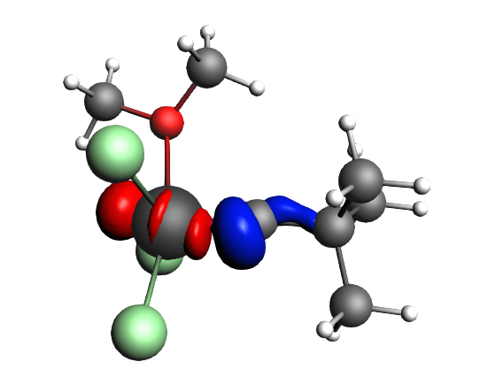 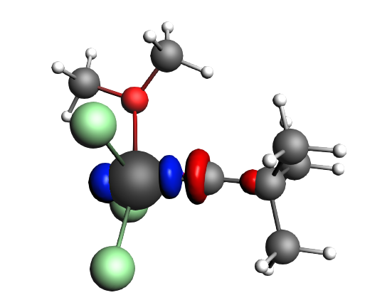{kind=link}
{kind=link}
left: β-Δρ ΔE=-73 kcal/mol (|v|=0.54), right: α-Δρ ΔE=-33 kcal/mol (|v|=0.42), one electron-sharing σ bond
References
| [1] | (1, 2) F.M. Bickelhaupt, E.J. Baerends, Kohn-Sham Density Functional Theory: Predicting and Understanding Chemistry, Reviews in Computational Chemistry 15, 1 (2000) |
| [2] | M. Mitoraj, A. Michalak, Donor–Acceptor Properties of Ligands from the Natural Orbitals for Chemical Valence Organometallics 26, 6576 (2007) |
| [3] | (1, 2, 3, 4, 5, 6) P. Jerabek, P. Schwerdtfeger, G. Frenking, Dative and Electron-Sharing Bonding in Transition Metal Compounds Journal of Computational Chemistry 40, 247 (2019) |